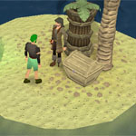

")
Eventos surpresa
Introdução | Como funcionam os eventos surpresa | Tipos de eventos surpresa | Recompensas | Eventos surpresa retirados
Introdução
Enquanto estiver jogando RuneScape você pode experimentar um evento estranho e inesperado ou perceber que alguma coisa peculiar está acontecendo em algum lugar próximo. Esses eventos surpresa normalmente irão envolver o aparecimento de uma pessoa ou animal raro, que irão pedir que você faça algo por eles, seja uma tarefa ou resolver um enigma. Completar o evento não irá levar muito tempo e, se você tiver sorte, pode muito bem se beneficiar com ele. Assegure-se de estar com seu espírito preparado, pois eventos surpresa podem acontecer a qualquer hora e em qualquer lugar.
Como funcionam os eventos surpresa
Os eventos surpresa irão teleportar você a locais raros que podem ou não fazer parte do RuneScape em si. Você não poderá sair até que tenha terminado o evento com sucesso ou fracassado na tentativa. Se você completar o evento com êxito será retornado ao local onde estava antes; se fracassar, será teleportado para um local aleatório. No entanto, não se preocupe muito sobre fracassar em um evento: você nunca será teleportado para um local perigoso.
Os eventos surpresa acontecerão com uma certa regularidade, mas se você completá-los com êxito e de modo consistente, você os encontrará com menos frequência.
Tipos de eventos surpresa

Apicultor
O apicultor acabou de adquirir uma nova colmeia, mas está encontrando alguma dificuldade para colocá-las todas juntas. Ajude-o pegando os quatro pedaços da nova colmeia e mostrando como ele pode uni-los. No entanto, se fracassar nesta tarefa você será confrontado com um enxame de abelhas irritadas.

Arca do Capitão Arnav
Os piratas não são normalmente conhecidos por sua generosidade, mas este é um pouco diferente. Talvez seja porque ele vive sozinho em uma ilha deserta ou talvez porque ele passa muito tempo tomando sol. Seja lá qual for a razão, se você conseguir ajudá-lo a abrir sua arca do tesouro, ele ficará mais do que contente em demonstrar sua gratidão.
Administradores
Existem, na verdade, três desses chamados "administradores": Niles, Miles e Giles. Eles têm uma estranha tendência de submeter os aventureiros a testes de identificação aparentemente sem propósito. Sinceramente, o melhor a fazer é simplesmente responder os testes - isso parece deixá-los contentes.
Demônio da Repetição
No chão e faça vinte! Vamos lá, soldado, mostre-me que você é capaz! O demônio da repetição está aqui para deixar você em forma, e ele não vai aceitar nenhuma desculpa. Flexão, polichinelo e abdominais - você terá que trabalhar muito para impressionar este demônio, mas se seguir as ordens dele, ele brindará você com uma recompensa.
Bob maligno
Bob maligno está sempre procurando por escravos humanos para servi-lo em sua ilha misteriosa. Ele levará você às pressas para ScapeRune sem hesitar por um momento e ali você será forçado a uma vida de servidão perpétua. A única forma de escapar é esperar o Bob dormir, mas ele não vai tirar seu gatochilo antes de comer alguma coisa...
Gêmea má
A vida é difícil quando se tem uma gêmea má, como Molly sabe muito bem. Ela conseguiu capturar sua irmã malvada, mas a garota má usou um feitiço para arrastar um espectador inocente para a prisão com ela. Afaste a gêmea má da multidão e você ganhará a gratidão da Molly.
Silvícola esquisito
Este cara excêntrico tem uma queda por faisão, mas ele prefere que outros cacem por ele. Ele é bem exigente e não vai aceitar qualquer pássaro. Parece que o que é importante é o número de penas da cauda que o faisão tem, mas não me pergunte o porquê disso. Certifique-se de conseguir o pássaro correto ou o silvícola esquisito vai ficar ofendido.
Beije a rã
Todo mundo sabe que a única maneira de devolver a um sapo a sua forma de príncipe (ou princesa, dependendo do caso) é lhe dando um beijo. Eu sei que isso parece um pouco desagradável, mas se você está disposto a ajudar existe uma recompensa pra você. Então, se for abordado por um sapo falante, prepare o biquinho...
Cava Cova
Esse cava cova míope conseguiu colocar cinco caixões nos túmulos errados. Se ele tivesse olhado mais perto na lápide, talvez ele soubesse onde cada um tinha que estar! Ajude-o a colocar o conteúdo de cada caixão na lápide apropriada no cemitério. Fácil, não?
Achados e Perdidos
Se você se encontrar no escritório de achados e perdidos, você deve ter escorregado para o plano abissal. Esse é um tipo de reino intermediário, onde os perdidos e confusos se encontram de tempos em tempos. Mas não se preocupe: você deve ser capaz de retornar ao RuneScape sem muita dificuldade.
Labirinto
Pode parecer simples, mas esse labirinto é enganosamente difícil. Felizmente, o homem velho misterioso está a disposição para dar alguns conselhos e para ajudar a navegar pelo labirinto. Encontre o caminho para o centro do labirinto e ganhe uma recompensa; quanto mais rápido chegar, maior será o prêmio!
Mímica
Minha mãe sempre me dizia: "se você de repente se encontrar em um palco com um mímico, simplesmente faça tudo o que ele fizer e você estará bem". E ela estava certa. Observe o que ele faz e depois copie sua atuação. O que poderia ser mais simples?
Pelourinho
Aventureiros sem sorte podem acabar trancados num pelourinho, um tipo de prisão para uma pessoa onde bem provavelmente serão atirados tomates podres. Sair dali deve ser bem fácil, desde que você consiga descobrir a chave certa para a fechadura...
Pinball
Esse jogo gigante de pinball não deve causar muitos problemas; só dê uma olhada nos postes e toque o que estiver iluminado. Uma vez que você tiver tocado o poste correto por dez vezes estará livre. Ah, e não irrite os trolls que estão de guarda na saída ou eles darão uma surra em você!
Pete Prisioneiro
O pobre Pete prisioneiro foi preso no espelho do mundo do ScapeRune por anos e agora você foi preso também! Para assegurar a fuga do Pete - e a sua - você terá que encontrar a chave da prisão. Talvez ela esteja dentro de um daqueles estranhos animais feitos de balão...
Mestre do quiz
Boas-vindas ao mais popular show de perguntas do RuneScape: Tire o que não combina! Você foi especialmente escolhido para participar: tudo o que você tem de fazer para ganhar é acertar quatro respostas consecutivas. É fácil - simplesmente descubra o que não combina. Agora você conhece as regras, vamos jogar!
Moça do lanche
Tá com fome? Achei que estava. A moça do lanche gosta de ter certeza de que os aventureiros estão bem alimentados e vai, às vezes, levá-los a sua loja de sanduíches mágicos para um lanche rápido. No entanto, ela pode ser um pouco irritadiça e, se você pegar alguma coisa que ela não te ofereceu, ela vai ficar realmente irritada!
Teste surpresa
O homem velho misterioso parece pensar que você precisa de um pouco de exercício intelectual e vai se certificar que você o tenha! Na sala de aula do Sr. Mordaut, você se sentará entre um bando de alunos excêntricos para fazer um teste da sua habilidade de reconhecimento de padrões. Preste atenção e você se sairá bem.
Recompensas
Sempre que você completar um evento surpresa com êxito, você receberá uma caixa de presente evento surpresa. (A única exceção é o evento Labirinto). Dentro da caixa estará uma seleção de objetos, dos quais você pode escolher uma recompensa. Caixas de presentes sempre irão conter uma seleção de moedas, runas, carvão mineral, essência, minério, barras, gemas, ervas, sementes, talismãs e lâmpadas de experiência para você escolher. Além do mais, algumas caixas lhe darão a opção de pontos de trajes, que podem ser trocados por parte de um traje com Iffie na loja de roupas da Thessalia em Varrock.
Eventos surpresa retirados
Alguns eventos surpresa não estão mais ativados porque, na maioria das vezes, a pessoa (ou criatura) responsável não está mais fazendo seu trabalho. A maioria dos guardiões, por exemplo, agora passam seus dias no Vale Encantado (no qual você pode chegar usando seus anéis de fada), enquanto alguns dos tipos mais repulsivos, como o capitão Mão, moram na prisão de Porto Sarim. De tempos em tempos, você ainda verá o Dr. Jekyll correndo para a farmácia de Varrock numa tentativa desesperada de manter o Sr. Hyde sob controle; e se você estiver em Karamja, a sudoeste de Brimhaven, você pode se deparar com a planta estranha que produz frutos excelentes. O anão tonto também será visto de vez em quando, cambaleante sobre uma moda extravagante. Se você falar com ele, e se ele gostar de você, pode ser que ele te convide para um kebab e algumas garapas.

Mais artigos em Guia do Jogo
|
|
|
Mais ajuda Se este artigo não ajudar você, as seguintes seções do site RuneScape podem ser úteis:
|
|